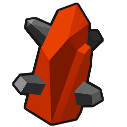
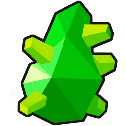
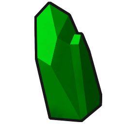
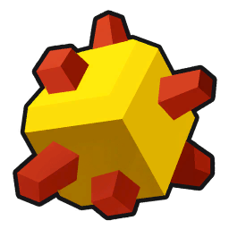
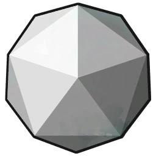
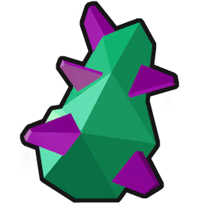

Deep Rock Galactic
(czyli o tym, jak alkohol wpływa pozytywnie na wydajność krasnoludów)
O czym jest?
Deep Rock Galactic to pierwszoosobowy co-op, w którym grupa czterech krasnoludów wykonuje operacje wydobywcze na planecie Hoxxes-IV na rzecz korporacji o tej samej nazwie co gra. Korporacja na operacje wydobywcze na tej planecie przyjmuje tylko i wyłącznie krasnoludów z racji ekstremalnych warunków. Zazwyczaj tych bez żadnego doświadczenia. Przeciętny "zielonobrody" nie przeżywa do czasu awansu.
Klasy i Arsenał
W grze mamy do wyboru cztery klasy: Scout, Gunner, Engineer i Driller. Każda z nich ma dostęp do innego arsenału. Arsenał wyróżniamy na broń główną, poboczną, specjalną, użytkową, granaty, kilof i zbroję. Każda klasa ma identyczny kilof i tylko jedno unikatowe ulepszenie w swojej zbroi.
| Klasa | Główna | Poboczna | Specjalna | Użytkowa | Granaty | Ulepszenie Zbroi |
|---|---|---|---|---|---|---|
| Scout | Karabin, Karabin wyborowy, Karabin plazmowy | Stzelba dwulufowa, Podwójne karabinki automatyczne, Kusza | Wyrzutnia Flar | Hak do chwytania | Pole Magnetyczne, Zamrażający, Feromony, Elektryczny Boomerang | Obniżenie obrażeń od upadku |
| Gunner | Minigun, Działo automatyczne, Wyrzutnia minirakiet | Ciężki rewolwer, Pistolet seriostrzelny, Pistolet cewkowy | Generator Tarczy | Wyrzutnia tyrolki | Naczepny, Zapalający, Kasetowy, "Leadburster" | Obniżenie obrażeń od wybuchów |
| Engineer | Strzelba pompka, Karabin Woltaiczny, Karabin Naprowadzający | Wyrzutnia granatów, Przecinak laserowy, Dyfraktor Laserowy | Działko | Wyrzutnia Platform | Przynęta, Seryjny plazmowy, Mina zbliżeniowa, Horda Niszczarek | Obniżenie obrażeń od trucizny |
| Driller | Miotacz ognia, Zamrażarka, Wyrzutnia kwasu | Pistolet pół-automatyczny, Ładowarka Plazmowa, Działo Mikrofalowe | C4 | Wiertła | Topór, Silnie wybuchający, Neurotoksyna, Sprężynowa Piła | Obniżenie obrażeń od ognia |
Prawie każdy przedmiot w tabeli można nabyć oraz ulepszyć. Wyjątek stanowią granaty, które można tylko nabyć.
Perki
Każdy krasnolud ma dostęp do tego samego zbioru perków. Perki wyróżniamy na dwie grupy: pasywne (oznaczone kolorem ciemno-różowym) oraz aktywne (oznaczone kolorem cyjankowym) Krasnoludy mogą się wyposażyć w trzy perki pasywne i dwa perki aktywne. Dostęp do trzeciego miejsca na perk pasywny i drugiego miejsca na perk aktywny mają tylko krasnoludy, które awansowano. Dostęp do drugiego miejsca na perk pasywny trzeba zakupić punktami perków. Punkty perków można otrzymać wykonując kamienie milowe - określone, proste do wykonania czynności (typu ukończ x misji na danym biomie) Każdy perk może zostać ulepszony.
Misje, Modyfikatory, Nadmierne spożywanie alkoholu
Misje
W grze dostępne jest 9 misji.
Ekspedycja Wydobywcza: Najprostrza misja. Celem jest wydobycie 200/250/325/400 jednostek surowca o nazwie Morkite. Ma on ciemno-cyjankowy kolor.
Łowy na jaja: Celem jest wydobycie 4/6/8 jaj Arachnidów.
Rafineria: Celem jest zainstalowanie pomp do trzech studni płynnego Morkite'u i podłączenie każdej rurociągiem do Rafinerii. Po podłączeniu i zbudowaniu wszystkich rurociągów, należy bronić rafinerii i naprawiać rurociągi dopóki nie zakończy wydobycia.
Odzysk: Celem jest naprawienie 2/3 jednostek MINI-M.U.L.E (do jednostki M.U.L.E. krasnoludy depozytują wykopane surowce), zatankowanie podu ucieczkowego i ewakuacja.
Ekstrakcja Punktowa: Celem jest wydobycie 7/10 klejnotów o nazwie Aquarq. Są to niebieskie klejnoty które są zakopane w ścianach jaskinii. Depozytowanie odbywa się poprzez platformę bojową. Czas jest kluczowy - obecność wroga się nasila z minuty na minutę.
Eskorta: Celem jest eskortowanie, naprawianie i tankowanie Drilldozera do tzw. Ommoran Heartstone - magicznego kamienia, który będzie walczyć o to, aby nie zostać wydobytym.
Eliminacja: Celem jest zabicie 2/3 "Drednotów" - prawie niezniszczalnych, gigantycznych arachnidów, które zagrażają operacjom wydobywczym.
Sabotaż Przemysłowy: Celem jest wydobycie Jednostki Danych należącej do rywalizującej korporacji. Aby to zrobić, należy zniszczyć dwa generatowy, które zasilają tzw. "Caretakera" - odwróconą piramidę, która ma do dyspozycji cztery macki i ma zadanie chronić Jednostkę Danych.
Głęboki Skan: Celem jest odnalezienie Geody Morkite'u. Robi się to poprzez skanowanie 3/5 Kryształów Rezonansowych, poczym zesłana zostaje Winda Bojowa, którą należy bronić, gdy ona wierci w dół do geody.
Modyfikatory
Każda misja może występować z Modyfikatorem. Wyróżniamy dwa typy - Mutacje (czerwone) oraz Anomalie (żółte). Mutacje działają przeciwko graczom, natomiast Anomalie są albo neutralne albo pozytywne. Misje mogą mieć do dwóch mutacji (ale zazwyczaj tylko jeden - na każdy 30-minutowy cykl biomów jest tylko jedna misja z dwoma mutacjami) i co najwyżej jedną anomalię. Granie na misjach z mutacjami jest nagradzane podwyższonym mnożnikiem nagród.
Alkohol
W stacji kosmicznej, na której mieszkają krasnoludy, funkcjonuje bar. W tym barze można zakupić różnorakie alkohole z różnymi efektami - tymczasowe zwiększenie/zmniejszenie wzrostu, zamrożenie, podpalenie, aura taneczna, tymczasowy wzrost intelektu, czy natychmiastowe zaśnięcie z powodu siły alkoholu.
Jest też grupa "Piw Specjalnych" - jest oferowane tylko jedno na czas bycia w stacji. Wypicie piwa specjalnego daje określony buff na czas misji.
Przykładowe buffy to zwiększenie zdrowia, natychmiastowe kopanie kilofem, obniżenie obrażeń od upadania, szybsze dźwiganie ciężkich klejnotów, zwiększona ilośc wydobywanego złota/Morkite'u, zwiększone obrażenia wręcz...
Zlecenia, Awansowanie, Overclockowanie, Głębokie Kopy
Zlecenia
W grze dostępny jest terminal zleceń - są to, innymi słowy, "questy" do wykonania i odblokowania konkretnych nagród, np. najwyższy poziom trudności, Tygodniowe Łowy Overclocków, odblokowanie misji. Są dostępne również zadania sezonowe, np. halloweenowe, świąteczne, sylwestrowe. Każde zlecenie ma określoną liczbę misji do wykonania. Gracz nie wie jakie misje będą kolejne dopóki nie wykona misji poprzedzającej. Zazwyczaj misje są losowane, ale niektóre zlecenia mają określone typy misji a nawet ich kolejność.
Awans
Gdy dana klasa krasnoluda osiągnie poziom 25, dostępne jest zlecenie awansu. Należy wykonać cztery misję. Po wykonaniu tych misji należy dokonać wpłaty kredytów oraz surowców. Po pierwszym awansie odblokowane zostają Głębokie Kopy oraz zlecenie na odblokowanie Tygodniowego Łowu Overclocków. Awans klasy nadaję kolorową ramkę ozdobną z określoną liczbą (do 3) gwiazdek. Każdy awans również nagradza trzy matryce Overclockowania: jedną pustą, jedną na broń i jedną kosmetyczną.
Głębokie Kopy
Każda klasa, która przynajmniej raz awansowała, kwalifikuje się na Głębokie Kopy - długie i niebezpieczne operacje, które nagradzają matryce Overclockowania. Każda operacja ma trzy etapy. Każdy etap składa się z misji głównej i misji pobocznej. Niektóre misje główne mogą pojawić się jako poboczne, a niektóre nie mogą. Aby przejść do następnego etapu, należy wykonać obie misje. Między etapami zachowywany jest stan zdrowia, ilość zasobów oraz amunicji, więc planowanie jest kluczowe. Za wykonanie każdego etapu nagradzana jest pusta matryca, matryca na broń i matryca kosmetyczna, w tej kolejności. Ilość podejść jest dowolna, ale każde zaczyna się od pierwszego etapu. Głębokie Kopy oczywiście dzielimy na te łatwe (poziom trudności etapów 3/3.5/3.5) i te trudne (poziom trudności etapów 4.5/5/5.5). Na każdy z nich zaleca się wypicie Piwa Specjalnego - efekty są przechowywane między etapami.
Overclockowanie
Po pierwszym awansie w grze, odblokowana zostaje Kuźnia. Pozwala ona na wydanie kredytów i surowców na wytworzenie Overclocka. Gracz na etapie otrzymania overclocka na broń wie jakiej broni i klasy dotyczy. Jedyne bronie w grze które się kwalifikują na otrzymanie overclocka to broń główna i poboczna. Na każdą taką broń można nałożyć tylko jeden Overclock. Są trzy klasy Overclocków - stabilne (zielone), zbalansowane (żółte) i niestabilne (czerwone). Jak nazwa sugeruje, stabilny Overclock zazwyczaj tylko marginalnie zwiększa kilka statystyk, tak jak zwykłe ulepszenie broni. W Overclockach zbalansowanych już istnieją debuffy statystyk ale silniejszy efekt. Overclocki niestabilne oferują największą moc i zazwyczaj zmieniają od gruntu jak działa broń, ale posiadają dużo debuffów w statystykach i albo wymagają konkretnej konfiguracji ulepszeń, albo wymuszają konkretny styl gry, albo nawet oba.
Przykładem stabilnego Overclocka jest "Specjalny Proch" dla Strzelby Dwulufowej Scouta. Gwarantuje on potężny odrzut, który zezwala na efektywne latanie po mapie jako ta klasa.
Jednym z zbalansowanych Overclocków jest Płonące Piekło dla Miniguna Gunnera. Przyspiesza on przegrzewanie, ale również podpala przeciwników którzy są w zasięgu 5-metrowego stożka.
Paruje się on dobrze z innym zbalansowanym Overclockiem, Lotnymi Pociskami, dla Ciężkiego Revolvera. Lotne Pociski sprawiają, że rewolwer zadaje 300% więcej obrażeń płonącym przeciwnikom w zamian za -10 obrażeń w statystykach.
Natomiast najbardziej ikonicznym niestabilnym Overclockiem w grze jest Gruby Chłopiec - Overclock, który zamienia granaty w wyrzutni granatów inżyniera na mini-bomby atomowe z niesamowitym polem rażenia, ale zmniejsza liczbę maksymalnej amunicji o 70% i prędkość lotu granatów o 30%.
Puste Matryce można "wypełnić" gdy się znajdzie tzw. Wydarzenie Maszynowe. Jest to krótkie (ale czasem niekoniecznie łatwe) zadanie do wykonania, na które jest określony limit czasu 3 minut. Przykładowym zadaniem jest zabicie 40 Arachnidów Ebonitowych. Można to zrobić tylko wyłącznie bronią wręcz. "Maszyna" w pobliżu wydarzenia wyrzuca power-up, który pozwala na szybszy Mocny Atak Kilofem. Po pomyślnym wykonaniu Wydarzenia Maszynowego, odblokowuje się Narzędzie Infuzji. Jeżeli gracz posiada pustą matrycę, może ją wsadzić do tego narzędzia i wybrać jedną z trzech opcji wypełnienia matrycy. Z reguły (dopóki się nie odblokuje wszystkich overclocków na broń) do wyboru są dwa overclocki na broń (sygnalizowana jest na etapie wyboru tylko klasa, która otrzyma Overclock) i jeden overclock kosmetyczny. Po wyborze, gracz dowiaduje się konkretnie jaki Overclock otrzymał.
O Overclockach kosmetycznych nie ma co dużo pisać. Jest ich około 3 razy więcej niż overclocków na broń i składają się z różnych czapek, animacji po wygraniu, bród itp.
Surowce
| Ikona | Nazwa | Miejsca Występowania |
|---|---|---|
|  | Magnite | Magma Core, Glacial Strata, Sandblasted Corridors |
|  | Umanite | Radioactive Exclusion Zone, Azure Weald, Dense Biozone, Glacial Strata |
|  | Jadiz | Crystalline Caverns, Hollow Bough, Fungus Bogs |
|  | Bismor | Dense Biozone, Crystalline Caverns, Hollow Bough, Salt Pits |
|  | Enor Pearl | Salt Pits, Sandblasted Corridors, Radioactive Exclusion Zone |
|  | Croppa | Azure Weald, Fungus Bogs, Magma Core |
Galeria
Jak oceniasz tą stronę?
Ocenienie Korporacji Deep Rock Galactic na ocenę niższą niż 5 gwiazdek będzie skutkowało podtrąceniem pensji za 5 następnych misji. Miłego czytania!